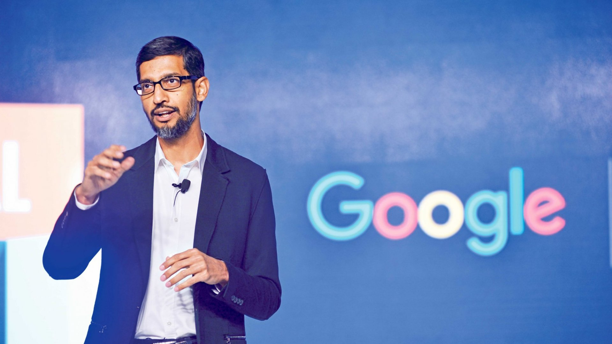

Article
 Google reorganized itself in August 2015 to become a subsidiary of the holding company Alphabet Inc. Internet search, advertising, apps, and maps, as well as the mobile operating system Android and the video-sharing site YouTube, remained under Google. Separate Google ventures—such as longevity research company Calico, home-products company Nest, and research lab Google X—became separate firms under Alphabet.Page became CEO of Alphabet, Brin its president, and Schmidt its executive chairman.Sundar Pichai, senior vice president of products, became Google’s new CEO.Alphabet again reorganized in 2017 to create an intermediate holding company, XXVI Holdings, and to convert Google into a limited liability company (LLC). In 2018 Schmidt stepped down as executive chairman. More changes followed in 2019 as both Brin and Page left their posts as president and CEO, respectively. However, they both remained on Alphabet’s board of directors. Pichai became CEO of the holding company while retaining that position at Google .